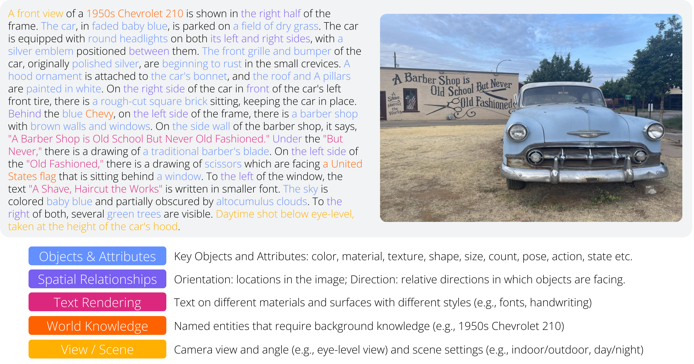
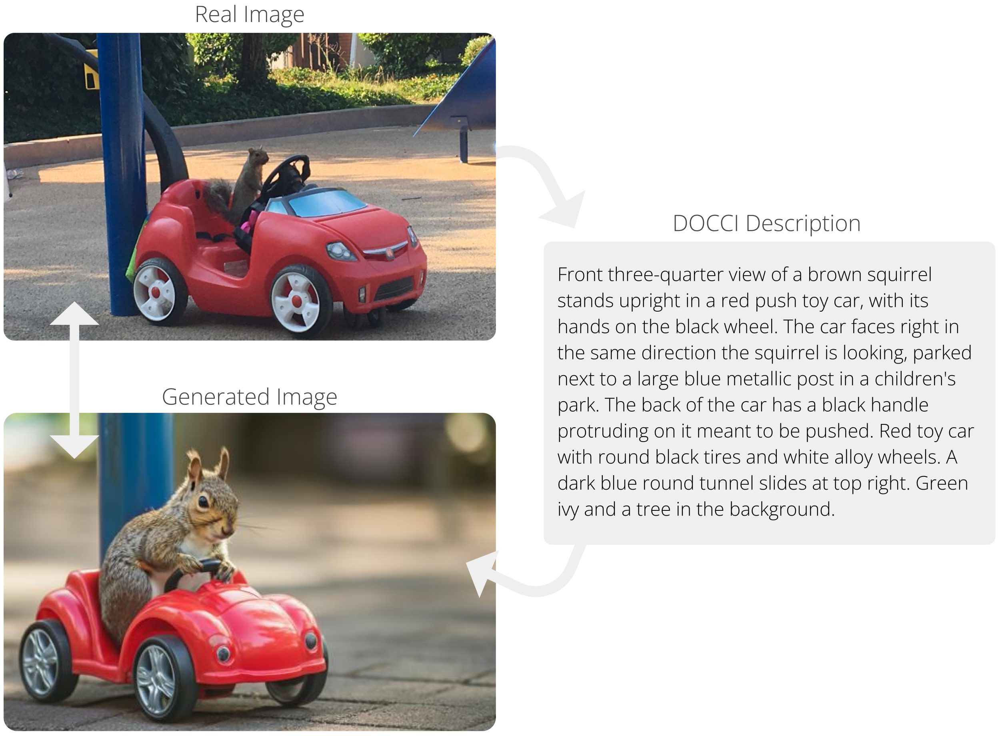

@inproceedings{OnoeDocci2024,
author = {Yasumasa Onoe and Sunayana Rane and Zachary Berger and Yonatan Bitton and Jaemin Cho and Roopal Garg and
Alexander Ku and Zarana Parekh and Jordi Pont-Tuset and Garrett Tanzer and Su Wang and Jason Baldridge},
title = {{DOCCI: Descriptions of Connected and Contrasting Images}},
booktitle = {arXiv},
year = {2024}
}
The DOCCI dataset consists of comprehensive descriptions on 15k images specifically taken with the objective of evaluating T2I and I2T models. These cover a lot of key details in the images, as illustrated below.
This unprecedented level of detail in the descriptions allows to evaluate T2I models by messuring how well they reconstruct the real images, as seen in the example below.
🤗 DOCCI can also be used via Huggingface Datasets 🤗
Detailed descriptions of each of the DOCCI images. The format is JSON Lines, which means that each line is a JSON-encoded string. The description of each of the fields in the JSON object can be found in this README. If you find any error in the annotations, please report it in this form.
15k images that form the visual basis for the DOCCI descriptions (all either portrait or landscape aspect ratio).
Metadata about the images and the prompts as JSON Lines. The description of each of the fields in the JSON object can be found in this README.
An additional 9.6k unannotated images that are cropped to arbitrary aspect ratios from tall portraits to long landscapes.
The annotations and images are licensed by Google LLC under CC BY 4.0 license.
| Field | Description |
|---|---|
example_id |
The unique ID of an example follows this format:
<split_id>_<index>.
|
split |
Identifier of the data split it belongs to (e.g. qual_dev). |
image_file |
Image filename (JPEG format). |
description |
Text description of the associated image. |
| Field | Description |
|---|---|
example_id |
The unique ID of an example follows this format:
<split_id>_<index>.
|
cluster_id |
Cluster ID to which an image belongs. |
entity_tags |
Tags of common entities across DOCCI, such as #E_CAT_TIGER, which
refers to the same gray tabby cat that appears many times in DOCCI.
|
image_width |
Size of the image in pixels (width). |
image_height |
Size of the image in pixels (height). |
cloud_vision_api_responses |
Responses from Google Cloud Vision API such as object detection, OCR, and SafeSearch. |
dsg |
DSG subquestions and results. See the
DSG paper for more details. These are
only available for the test, qual_dev, and
qual_test splits.
|
distractors |
File names of four visually similar images. These are available for a randomly selected set of 1,000 test examples. For more details, see Section 3.3 of our paper. |